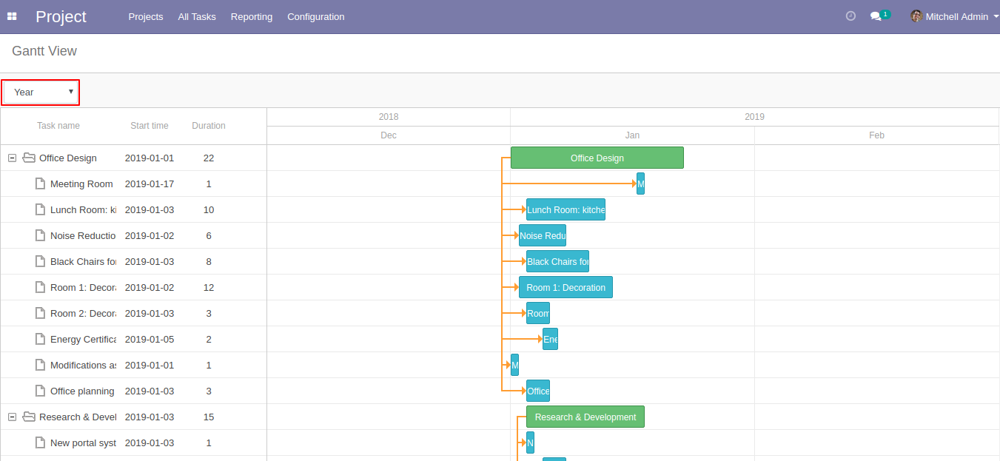

Note: This module is tested and working in Odoo community edition but not tested in Enterprise version. And we are supporting Ubuntu OS and not Windows OS.
Features
Project and Task date are automatically adjust by resize.
Easy to make Child/Sub tasks.
Easily create Project, Task and Sub-Task from Gantt View.
Filter by Day, Week, Month and Year
How to use
User must have to enable Task Logs check box from Project -> Configuration settings.
User have to configure project start date and end date for create Gantt View.
User have to set deadline for project tasks.
Gantt View can be open from Project menu, All task menu and Individual project.
Gantt View with all projects.
Gantt View for individual Project.
User can filter Gantt View by Day, Week, Month and Year.

Create Sub task.
Update Project date or Task date by resize.
Create Project, Task and Sub-Task.
NOTE: We give 60 days support for our customers. Before trying in your live db, please ask us to provide you for test link. If any other custom modules are installed and because of that some errors occurs then we charge extra.